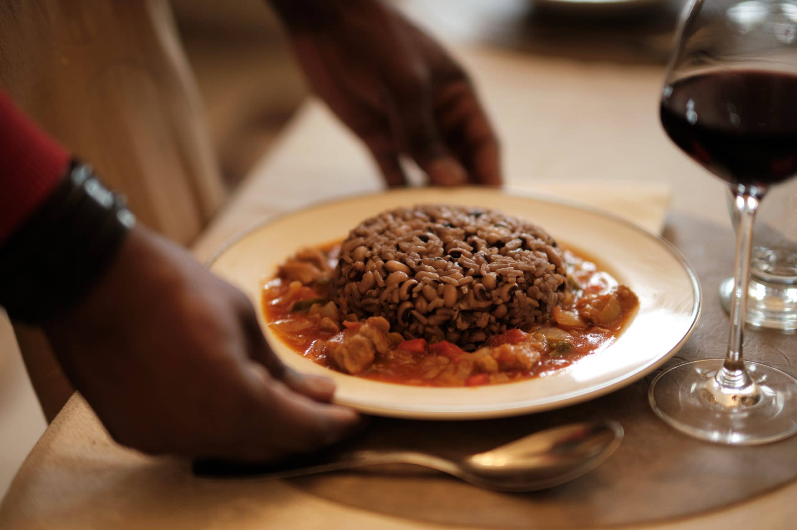

Une spécialitée Burkinabe : Benga
Pour Gustoso, Serge Benga nous concocte un plat dont l’origine remonte à la colonisation, et qui est facile à cuisiner, contient plein de vitamines et qui rassasie avant tout.
« Benga remplit l’estomac à tel point que le jeunes du Burkina Faso l’appelle désormais Prison Break », nous explique Serge.
Temps de préparation
Ingrédients pour 4 personnes
- 500g de graines de niébé ou Benga (variété de haricot)
- 300g riz
- 2 cuillères à soupe Bicarbonate de sodium
- Sel
Instructions
- Faire chauffer 2 litres d’eau jusqu’à ébullition, ajouter le Benga et faire cuire pendant 5 minutes dans l’eau bouillante. Puis, réduire la chaleur. Ajouter 2 cuillerées à café de bicarbonate de sodium afin de faciliter la cuisson et la digestion.
Laisser mijoter pendant 30 minutes jusqu’à ce que les haricots Benga soient al dente. En fonction de votre préférence, le Benga peut encore rester quelque temps dans la casserole. Y ajouter le riz et rajouter de l’eau si besoin. Seulement à ce moment, mettre une prise de sel dans l’eau. Le Benga est prêt à consommer une fois que les haricots et le riz sont cuits.
- La sauce :
2 tomates
2 oignons
1 poivron
Nutrition
| eau |
protéine |
alcool |
glucide |
| 69,6g |
1,53 |
__ |
23,8g |